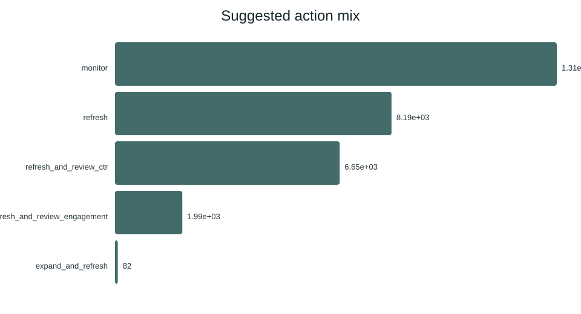

Case study
FlyRank Content Refresh Model
Ranking which pages to review first is normally a gut call. This project replaces the gut call with a transparent model, trained and validated on FlyRank's anonymized search data, then checked against a hand-written baseline so the improvement is measured, not assumed.
0.24 → 0.74
Precision@50, rule baseline → random forest
~3×
Lift in review-queue accuracy
30,000
Anonymized pages scored, client-holdout split


These are the pipeline's own generated charts and numbers (see
Read the full model report →
outputs/model_report.md in the repo) — decision-support for a human reviewer,
not a claim about Google's actual ranking algorithm.